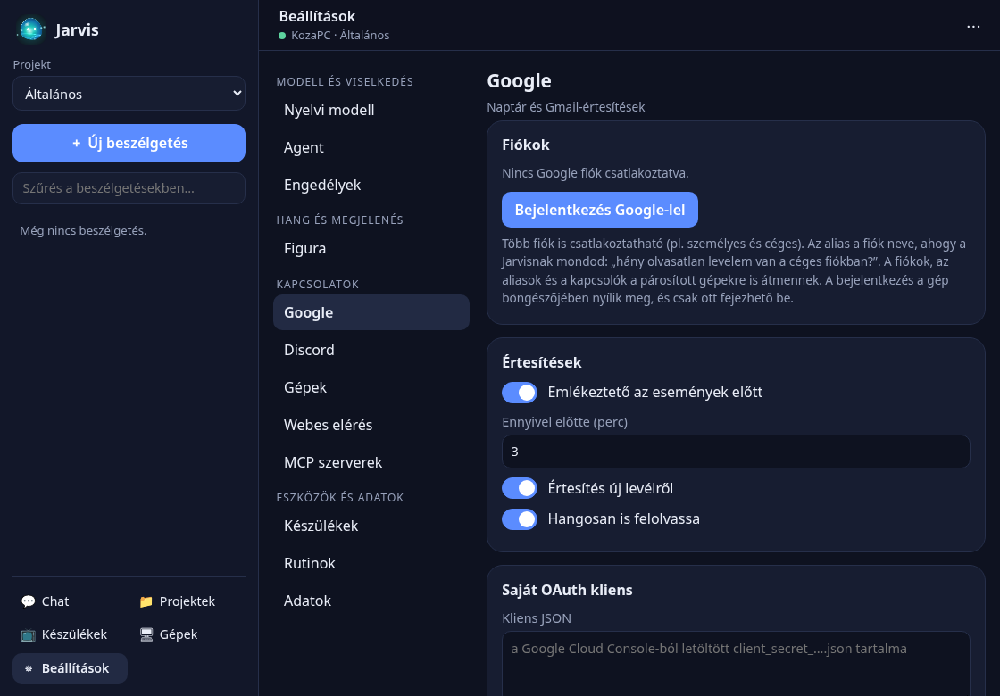
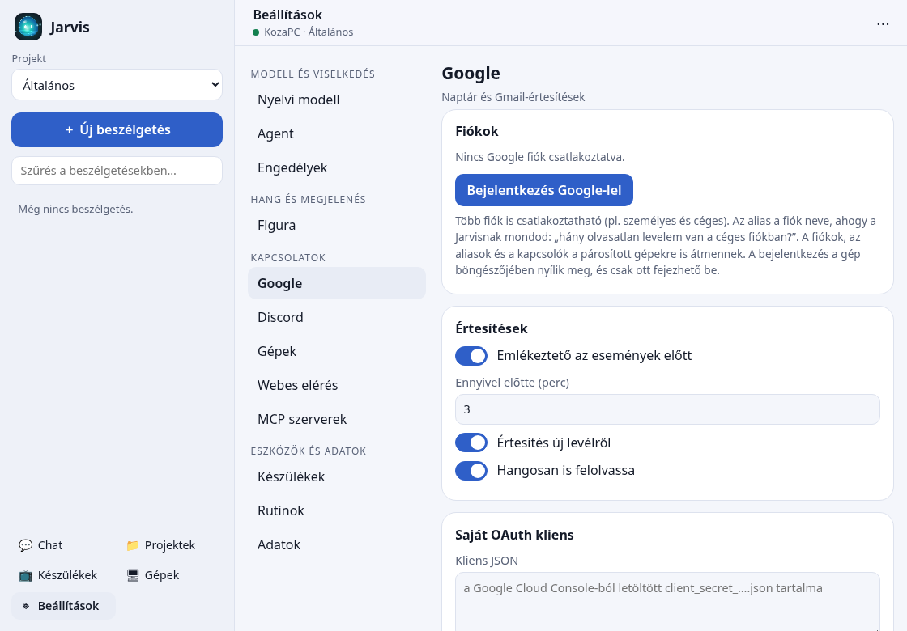

Egy app, ami beszél, cselekszik és emlékszik – a te kulcsaiddal és a te adataiddal.
Kérdezz természetes nyelven; a Jarvis fájlokat olvas és szerkeszt, parancsokat futtat (engedéllyel), keres a weben és tervet vezet.
Ébresztőszó, beszédfelismerés és felolvasás – mind helyben, a számítógépeden fut.
Események, emlékeztetők, napi összefoglaló; értesítés az új Gmail-levelekről a Google Naptárral együtt.
A hálózatod tévéi, klímái, kapcsolói, kamerái és rádiói – egy chat- vagy hangutasításnyira!
Párosítsd a gépeidet: a feladatok, projektek, memória és beszélgetések titkosított kapcsolaton követik az igényeidet.
Ismétlődő automatizációk: „minden hétköznap 7:30-kor kapcsold be a nappali klímát”, „minden hónap utolsó péntekén szólj a számlákról”. Chatben vagy hangon kéred, a kijelölt gépen futnak.
Kész eljárásleírások egy mappában: a Jarvis csak akkor tölti be őket, ha a kérésedhez illenek (pl. „írj commit-üzenetet”). Saját skillt egy SKILL.md fájllal írhatsz, a Beállításokban bármelyiket egyenként vagy az egészet kikapcsolhatod.
Nézd és irányítsd az Xboxodat a telefonodról vagy a böngészőből, a konzol akár 4K-s képe és hangja újrakódolás nélkül jön a helyi hálózaton át. Bluetooth-os Xbox-kontrollerrel vagy a képernyőre rajzolt joystickokkal játszhatsz, a képet pedig csak megtekintésre továbbküldheted tévére vagy OBS-be.
Bármilyen modell (helyi Ollama vagy felhős API), MCP-szerverek és webes felület a telefonodra.
A Jarvis megtalálja a hálózatod eszközeit és chatből vezérelheted őket akár a hangutasításaid segítségével. Az asztali gépeden vagy a szervereden fut, a telefonról pedig saját, biztonságos webes felületén érhető el.


Verzió: legfrissebb – ingyenes, személyes használatra. Az app magától frissül.
flatpak update frissíti: flatpak install --user https://flatpak.jarvisai.hu/hu.jarvis.app.flatpakref
Flatpak-fájl letöltése
Minden kiadás és a változásnapló
A Jarvis személyes, nem kereskedelmi projekt. A telepítők még nincsenek platformgyártói aláírással ellátva, ezért a Windows SmartScreen vagy a macOS Gatekeeper az első indításkor megerősítést kérhet.
Nincs Jarvis-szerver: a fejlesztő nem gyűjti, nem kapja és nem tárolja az adataidat. A Google-adatokat csak az általad kért naptár- és levélfunkciókhoz használja.
A felhasználó engedélyével a Jarvis a Google-fiókhoz kapcsolódik: a Google Naptár eseményeit mutatja, létrehozza és módosítja, a Gmailben pedig értesít az újonnan érkezett levelekről (csak metaadat: feladó, tárgy, dátum, címkék).
A Google-integráció opcionális. A Jarvis nélküle is teljes értékűen működik; a naptár- és levélfunkciókhoz van rá szükség. Használatához saját Google Cloud-projekt kell, benne egy OAuth-kliens (Client ID és Client secret), amelyet a Jarvis beállításaiban adsz meg. A Jarvisnak nincs központi alkalmazás-azonosítója és nincs szervere, ezért a hozzáférési tokenek kizárólag a te projektedhez és a te fiókodhoz tartoznak, és a gépeden, az operációs rendszer kulcstartójában maradnak.